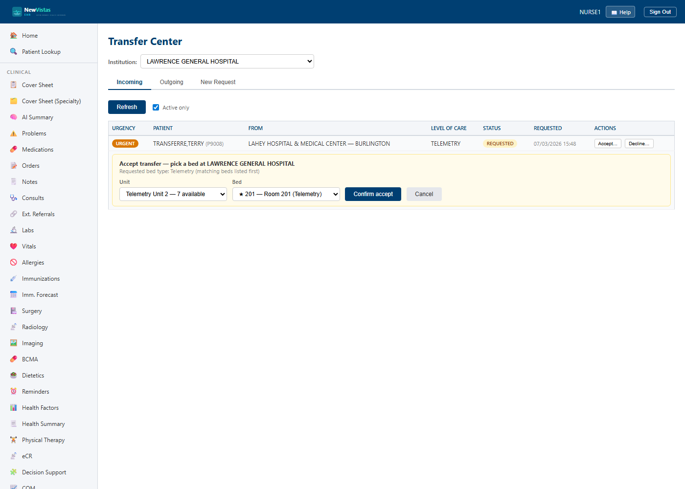

Transfer Center — accepting a patient from another hospital
When another hospital in the health system needs to send you a patient, their
request lands in your Transfer Center (/transfer-center).
You accept it by reserving one of your unit's beds, then confirm the patient's
arrival — which admits them onto your floor. Transfer actions require the
DG BED CONTROL key.
Only with more than one hospital
The Transfer Center (and its nav link) appears only when the deployment has more
than one institution — there's nowhere to transfer to otherwise.
Work your incoming queue
- Open
/transfer-centerand set the Institution picker to your hospital. - On the Incoming tab, click a REQUESTED row to read the clinical summary, reason, requested level of care, and urgency (EMERGENT / URGENT / ROUTINE).

Accept and place the patient
- Click Accept…. Choose a Unit, then a Bed — beds matching the requested type are starred and listed first.
- Click Confirm accept. The bed becomes Reserved for that patient on your Bed Board.
- When the patient physically arrives, click Complete arrival… and Confirm arrival. The patient is admitted into the reserved bed and now appears in your unit census.
If the bed slips away
If the bed you reserved is no longer usable when the patient arrives, use
Reassign bed… to reserve a different one, then complete the arrival.
Decline
If your unit can't take the patient, click Decline… on the REQUESTED row and give a reason (e.g. no telemetry capacity tonight). Nothing is reserved on a declined request, so nothing needs releasing.
You control your own beds
A transfer is only a request until you accept it. The sending hospital
can't put a patient in your bed — you choose the bed, and the patient isn't on
your census until you confirm they've arrived.